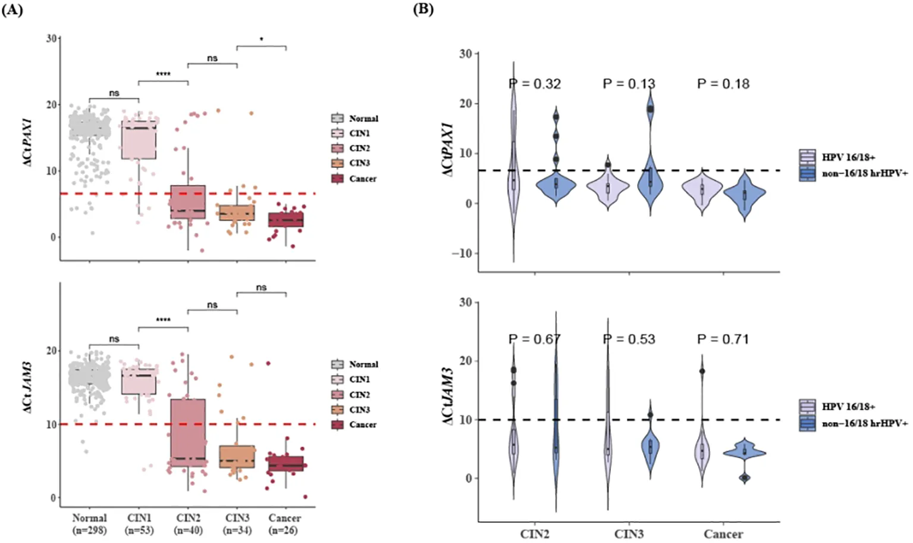
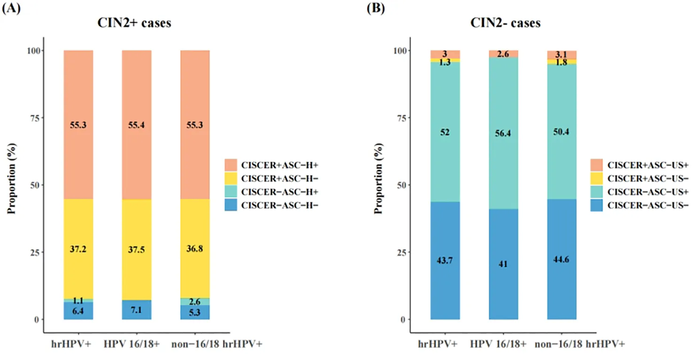

1Background & Objective
- Challenge: hrHPV+ is mostly transient; cytology triage is subjective with lower sensitivity.
- Objective: real-world evaluation of CISCER® PAX1/JAM3 methylation for triaging hrHPV+ women across genotypes & ages.
2Study Design & Cohort
436
women
396
hrHPV+
2
centers
HPV genotyping+
LBC cytology+
CISCER methylation
- Setting: Xuzhou + Yueyang, Dec 2022 – May 2024; median age 38 y (30–49).
3Diagnostic Performance — CIN2+ in hrHPV+ Women
92.6%
Sensitivity · CISCER
95.7%
Specificity · CISCER
0.941
AUC (0.903–0.979)
97.6%
NPV
54%
CIN3+ risk if (+) · 0.3% if (−)
| Method | Se % | Sp % | AUC |
|---|---|---|---|
| CISCER | 92.6 | 95.7 | 0.941 |
| LBC ASC-US+ | 91.5 | 45.0 | 0.683 |
| LBC ASC-H+ | 56.4 | 92.7 | 0.745 |
- vs cytology: similar sensitivity, far higher specificity (95.7% vs 45%).
- OR 276.3 (106.9–714.1) for CIN2+ — strongest single risk marker.
4Methylation Rises With Severity

Fig. 2 ΔCt by lesion grade — CIN2+ mean below cutoffs; no genotype difference once CIN2+.
- Dose–response: normal/CIN1 low, CIN2+ sharply elevated; all 26 cancers CISCER(+).
5Catches What Cytology Misses

Fig. 3 CIN2+ with low-grade cytology: 37.2% caught by CISCER+ (incl. 3 cancers); CIN2− with abnormal cytology: 52% correctly CISCER−.
- Two-way benefit: fewer missed high-grade lesions AND fewer unnecessary colposcopies.
6Subgroups & Cancer Safety
| Group | Se % | Sp % | AUC |
|---|---|---|---|
| All hrHPV+ | 92.6 | 95.7 | 0.941 |
| HPV16/18+ | 92.9 | 97.4 | 0.951 |
| Non-16/18 hrHPV+ | 92.1 | 95.1 | 0.936 |
| Age ≥50 | 100 | 94.4 | 0.972 |
| Age <30 | 82.6 | 100 | 0.913 |
- ≥50 y: 100% sensitivity — catches disease cytology misses in postmenopausal women.
- <30 y: 100% specificity — avoids unnecessary colposcopy & excision (fertility protection).
- HPV-independent: 2 hrHPV− adenocarcinomas detected by CISCER (1 with NILM cytology).